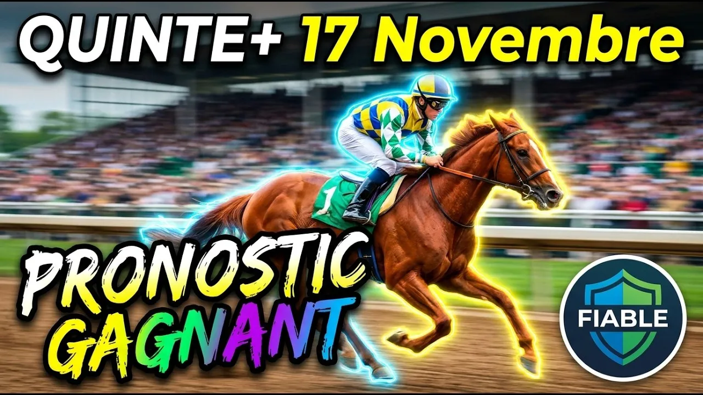

Mardi à Chantilly, le Prix de Beauvais réunit seize galopeurs de trois ans et plus sur les 1 600 mètres de la piste en sable fibré, corde à droite. Handicap doté de 50 900 euros, sur l'anneau cantilien, avec un lot où les niveaux se croisent : des chevaux d'âge confirmés, des quatre ans en pleine progression et deux trois ans ambitieux.
Sur le sable fibré, la surface est fluide et régulière, mais les stalles décident beaucoup. Partir le long du rail permet d'économiser ses forces dans les tournants. Partir à l'extérieur oblige à des manoeuvres délicates pour ne pas voyager nez au vent. Sur 1 600 mètres, l'explosivité à la sortie des boîtes et la capacité à placer une accélération nette dans la ligne droite font la différence.
Il y a quelque chose de particulier dans les handicaps de PSF en novembre. La lumière tombe tôt, la piste est rapide, et chaque course ressemble à une partie d'échecs jouée à grande vitesse. Les jockeys connaissent les pièges, les entraîneurs savent quelle valeur mène où, et le peloton se cherche pendant huit cents mètres avant de se livrer.
Ce qui rend cette épreuve passionnante, c'est la densité. Aucun cheval n'arrive avec une supériorité écrasante. Ferrari Fever porte 61,5 kilos et la valeur la plus haute du lot, ce qui le rend courageux à seulement courir. Olympic Message aligne les podiums. Jusearth Fal arrive sur deux places de premier plan. Derrière, une dizaine de concurrents peuvent figurer sans que cela constitue une surprise.
Alors on regarde les détails : la stalle, le poids, la façon dont le cheval a terminé sa dernière course, la main d'un jockey qui sait attendre. C'est ce travail de fourmi qui rend le Quinté attachant.
Hongre de cinq ans préparé par Julien Phelippon et monté par Thomas Trullier. Trois victoires consécutives sur le sable fibré cet automne, avant un test au niveau supérieur sur le sable deauvillais. De retour dans les handicaps avec la valeur la plus haute du lot et 61,5 kilos sur le dos, il s'élancera de la stalle 3. Son pilote connaît parfaitement ses qualités. Une place reste dans ses cordes si le déroulement lui sourit.
Hongre de six ans entraîné par Nicolas Perret et associé à Christophe Soumillon. Sa régularité à ce niveau est exemplaire : trois podiums consécutifs dans des épreuves similaires, dont une deuxième place le mois dernier dans le Prix de la Route des Princes sur ce parcours exact. Spécialiste du sable, il s'élance de la stalle 8 avec un pilote d'exception. Chance prioritaire, sans hésitation.
Mâle de cinq ans préparé par Stefan Richter et confié à Théo Bachelot. Valeur 41,5, il effectue une rentrée après quatre mois d'absence. Très performant sur les pistes en sable, il s'élance de la stalle 7. Si son entraîneur l'a affûté pour ce retour, sa pointe de vitesse finale peut créer une belle surprise. C'est le pari de la fraîcheur.
Hongre de quatre ans sous la coupe de Mathieu Pitart et guidé par Clément Lecoeuvre. Modèle de régularité, il vient de signer deux podiums remarquables, à ParisLongchamp puis à Fontainebleau. Très performant sur le sable fibré et idéalement placé dans la stalle 2, il dispose d'atouts majeurs pour jouer les premiers rôles. Notre base, et elle tient debout.
Mâle de quatre ans entraîné par Fabian-Xavier Weissmeier et monté par Maxime Guyon. Après un break bénéfique, il vient d'afficher son meilleur niveau en s'imposant facilement sur le sable de Deauville. Déjà victorieux au printemps sur ce parcours de Chantilly, il doit composer avec la stalle 12, tout en extérieur. Si son pilote lui masque l'effort rapidement, sa qualité peut le porter loin.
Femelle de six ans présentée par Christophe Plisson et associée à Fabrice Veron. Lauréate d'un événement sur ce tracé l'hiver dernier, elle traverse une période plus difficile cette saison. Elle bénéficie d'une baisse sur l'échelle des poids, mais s'élance de la stalle 16, tout à l'extérieur. Sa tâche est complexe et elle devra surtout rassurer ses supporters.
Hongre de quatre ans entraîné par Pierre Groualle et guidé par Aurélien Lemaitre. Après plusieurs accessits prometteurs, il s'est imposé dans le Prix de la Route des Princes sur ce parcours. Il encaisse trois kilos de surcharge pour ce succès, ce qui n'est jamais anodin sur 1 600 mètres. Sa forme et la stalle 4 lui permettent tout de même de viser un nouvel accessit.
Hongre de trois ans préparé par Francis-Henri Graffard et confié à Pierre-Charles Boudot. En constante progression, il reste sur un succès estival dans un événement sur le gazon de Deauville. Absent depuis deux mois et demi, il possède une belle marge et affronte ses aînés depuis la stalle 9. Le duo entraîneur-pilote est l'un des plus fiables du pays : choix prioritaire pour le podium.
Hongre de quatre ans, second atout de Mathieu Pitart, avec Tony Piccone au sulky. Gagnant d'un handicap cet été, il a ensuite échoué sur le sable cantilien, ce qui invite à la prudence. Sa marge est désormais réduite, mais la stalle 6 reste un avantage appréciable. Il peut se racheter, sans garantie.
Hongre de huit ans sous la responsabilité de Yann Barberot, monté par Hugo Journiac. Doyen du lot, il vient d'afficher un regain de forme en terminant sixième sur ce parcours. Un poids favorable, la stalle 13, et une expérience du sable qui n'a rien à prouver : voilà un candidat capable de pimenter les rapports à belle cote.
Hongre de six ans entraîné par David Smaga et guidé par Hugo Boutin. Vainqueur d'un événement cet été à Deauville, il n'a pas pu concrétiser lors de ses sorties suivantes. Il retrouve une surface qu'il apprécie et surtout la stalle 1, le long du rail, le meilleur cadeau que le tirage puisse offrir. Outsider spéculatif, capable de surprendre.
Pouliche de trois ans entraînée par Kevin Tavares et associée à Antoine Werlé. Elle s'illustrait dans les catégories inférieures et attaque un lot nettement plus relevé. La stalle 15 n'arrange rien. Sa tâche s'annonce compliquée à ce niveau, et nous la laissons de côté.
Hongre de six ans entraîné par Gérald Mossé et confié à Eddy Hardouin. Vainqueur sur ce tracé au printemps, il vient de se classer quatrième du Prix de la Route des Princes, la course de référence du lot. Bien situé au poids et confirmé sur le sable, il s'élance de la stalle 11 avec de solides arguments pour les places.
Hongre de trois ans préparé par Christophe Escuder et guidé par Stéphane Pasquier. Gagnant cet été à Deauville sur l'herbe, il a confirmé en se classant quatrième à ParisLongchamp. La seule inconnue reste son adaptation au sable fibré. Avec la stalle 5 et un pilote de cette trempe, il offre une chance très régulière.
Mâle de cinq ans sous la coupe de Nicolas Caullery et monté par Augustin Madamet. Gagnant cet hiver sur le sable cagnois, il peine à retrouver son meilleur niveau depuis. Sa valeur a été revue à la baisse et il hérite de la stalle 10. Il aura besoin de rassurer avant qu'on puisse compter sur lui.
Hongre de quatre ans entraîné par Jan Raja et monté par Coralie Pacaut. Il s'illustrait à un niveau inférieur récemment et monte de catégorie dans ce handicap. La stalle 14, à l'extérieur, complique encore les choses. Sa tâche sera ardue face à une telle opposition.
D'abord la densité, qui rend le pronostic honnête. Olympic Message arrive avec trois podiums de suite et une deuxième place sur ce parcours exact : c'est le profil du cheval qui ne déçoit pas. Jusearth Fal, lui, sort de deux podiums et part de la stalle 2, le long du rail, avec un jockey qui connaît la maison. Deux logiques différentes, deux solides raisons d'y croire.
Ensuite la marge. Freerider n'a que trois ans, il progresse à chaque sortie et se présente avec l'un des meilleurs duos du pays. Pumalin Park a couru la course de référence et s'y est classé quatrième. Thor Lightning revient frais, ce qui vaut souvent mieux qu'un cheval qui sort d'une troisième course rapprochée.
Enfin la cote. Charengo a déjà gagné ici et reste sur une victoire facile à Deauville. Fast Raaj, doyen du lot, revient en forme au meilleur moment. Muenchen a une stalle en or et un pilote qui sait finir. Voilà de quoi construire un Quinté qui ne ressemble pas à celui du voisin.
Jusearth Fal porte la base : deux podiums de rang, une aptitude au sable fibré et la stalle 2 le long du rail. Olympic Message est la première chance logique avec trois podiums consécutifs et Soumillon en selle. Freerider apporte la marge des trois ans, Pumalin Park la confirmation de la Route des Princes, Thor Lightning le pari de la fraîcheur. Pour la cote, Charengo, Fast Raaj et Muenchen sont les trois meilleures options du lot.
Base : 4 Jusearth Fal
Top 5 : 4 - 2 - 8 - 13 - 3
Couplé Placé :
4 Jusearth Fal et 2 Olympic Message avec 8 Freerider, 13 Pumalin Park et 3 Thor Lightning
Deux sur Quatre :
4 - 2 avec 8 - 13 - 3 - 5
Multi en 5 :
4 - 2 - 8 - 13 - 3
Quinté+ Ordre :
4 - 2 en piliers avec 8 - 13 - 3 - 5 - 10 - 14 en associés
Retrouvez l'analyse vidéo complète sur notre chaîne YouTube Bravo Turf. Abonnez-vous, activez la cloche des notifications et laissez un pouce bleu si ce décryptage vous aide.
Jouez avec modération
Une méthode rigoureuse n'exclut jamais la prudence financière. Ne misez jamais plus que ce que vous pouvez vous permettre de perdre. Fixez-vous un budget hebdomadaire et tenez-vous-y. En cas de difficulté, consultez Joueurs Info Service au 09 74 75 13 13.